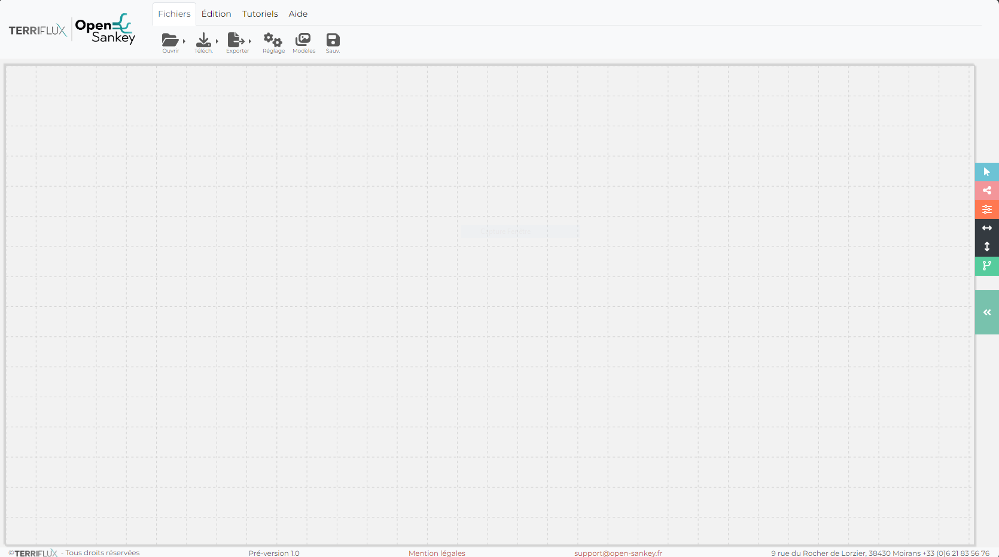

SankeySuite
Sommaire:
Documentation Utilisateur
Introduction de l’applications
Fonctionnalités de SankeySuite
SankeySuite
Documentation Utilisateur
Introduction de l’applications
Afficher la source de la page
Introduction de l’applications
Opensankey
: WebApp accessible en ligne ici
open-sankey
.
